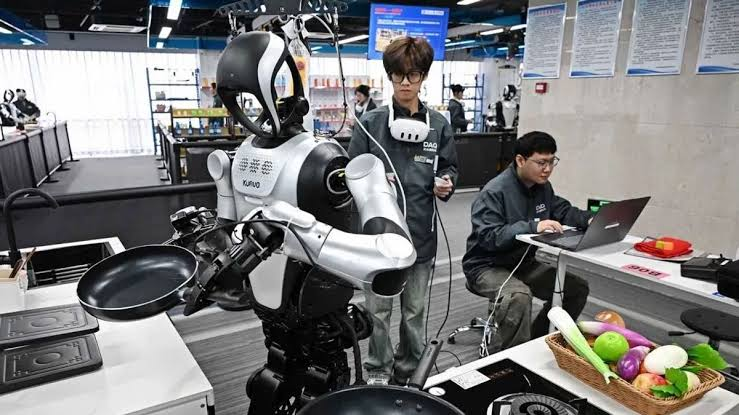

1

Diseñador de partes humanas del cuerpo humano
Profesionales especializados en bioingeniería que diseñan y crean órganos, tejidos y extremidades artificiales o impresas en 3D.
2

Desarrollador de robots e inteligencia artificial
Ingenieros encargados de crear, programar y optimizar sistemas autónomos y algoritmos inteligentes capaces de realizar tareas.
3
Veterinario de clones
Expertos en la clonación de mascotas queridas (perros, gatos, caballos).
4

Cocinero de insectos
Expertos culinarios enfocados en preparar y transformar insectos en alimentos nutritivos, para el consumo humano masivo.
5
Expertos en ciberseguridad
Profesionales que protegen sistemas informáticos, redes y datos contra ataques digitales, brechas de seguridad y amenazas cibernéticas.
6
Desarrollador de realidad virtual y aumentada
Creadores de entornos inmersivos y simulaciones digitales aplicados a la educación, el entretenimiento, el trabajo remoto y la medicina.
7
Expertos en deportes electrónicos
Especialistas en la gestión, entrenamiento, análisis táctico y organización de competencias profesionales de videojuegos.
8
Personal de cuidado de adultos mayores
Cuidadores especializados en la atención integral, salud y asistencia personalizada para una población global cada vez más longeva.
9
Expertos de reutilización de desechos
Encargados de transformar basura y subproductos industriales en nuevos materiales, energía o recursos útiles para reducir el impacto ambiental.
10
Expertos de blockchain
Desarrolladores y analistas que diseñan sistemas descentralizados y seguros para transacciones financieras, contratos inteligentes y trazabilidad de datos.
11
Ingenieros de impresión de edificios
Especialistas en construcción automatizada que utilizan tecnología de impresión 3D a gran escala para levantar estructuras y viviendas de forma rápida y eficiente.
12
Analistas de nuevas tecnologías
Investigadores que evalúan las tendencias emergentes del mercado para determinar el impacto, viabilidad y adopción de tecnologías innovadoras en las empresas.
.jpg)
.jpg)
.jpg)
.jpg)